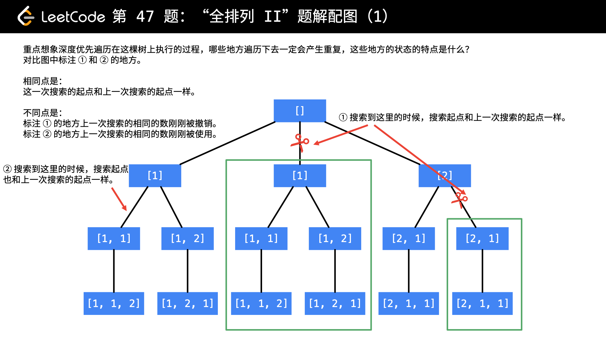

47. Permutations II
Given a collection of numbers that might contain duplicates, return all possible unique permutations.
Example:
Input: [1,1,2]
Output:
[
[1,1,2],
[1,2,1],
[2,1,1]
]

思考：去重剪枝的判断是怎么实现的？
参考资料
Given a collection of numbers that might contain duplicates, return all possible unique permutations.
Example:
Input: [1,1,2] Output: [ [1,1,2], [1,2,1], [2,1,1] ]
package com.diguage.algorithm.leetcode;
import java.util.*;
/**
* = 47. Permutations II
*
* https://leetcode.com/problems/permutations-ii/[Permutations II - LeetCode]
*
* @author D瓜哥, https://www.diguage.com/
* @since 2020-01-27 20:29
*/
public class _0047_PermutationsII {
/**
* Runtime: 1 ms, faster than 100.00% of Java online submissions for Permutations II.
* Memory Usage: 41.6 MB, less than 11.94% of Java online submissions for Permutations II.
*/
public List<List<Integer>> permuteUnique(int[] nums) {
if (Objects.isNull(nums) || nums.length == 0) {
return Collections.emptyList();
}
Arrays.sort(nums);
boolean[] used = new boolean[nums.length];
List<List<Integer>> result = new ArrayList<>();
backtrack(nums, 0, used, result, new ArrayDeque<>());
return result;
}
private void backtrack(int[] nums, int startIndex, boolean[] used,
List<List<Integer>> result, Deque<Integer> current) {
if (nums.length == startIndex) {
result.add(new ArrayList<>(current));
return;
}
for (int i = 0; i < nums.length; i++) {
if (!used[i]) {
// 修改 2：在 used[i - 1] 刚刚被撤销的时候剪枝，说明接下来会被选择，搜索一定会重复，故"剪枝"
if (i > 0 && nums[i - 1] == nums[i] && !used[i - 1]) {
continue;
}
used[i] = true;
current.addLast(nums[i]);
backtrack(nums, startIndex + 1, used, result, current);
current.removeLast();
used[i] = false;
}
}
}
public static void main(String[] args) {
_0047_PermutationsII solution = new _0047_PermutationsII();
int[] n1 = {1, 1, 2};
System.out.println(solution.permuteUnique(n1));
}
}